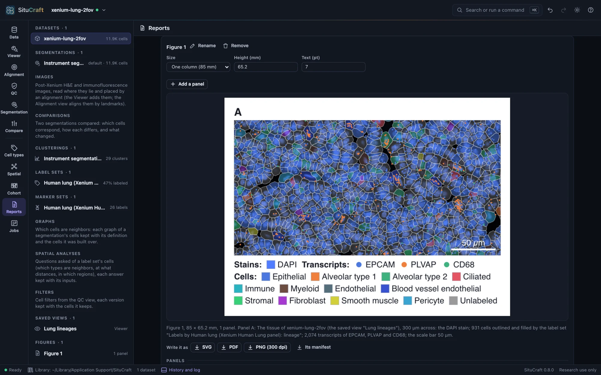
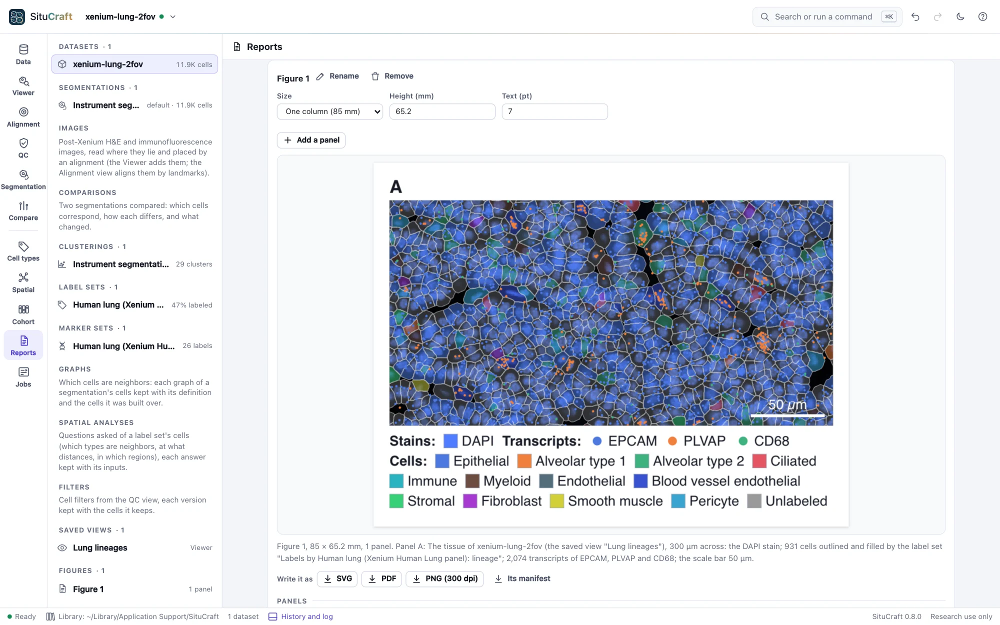
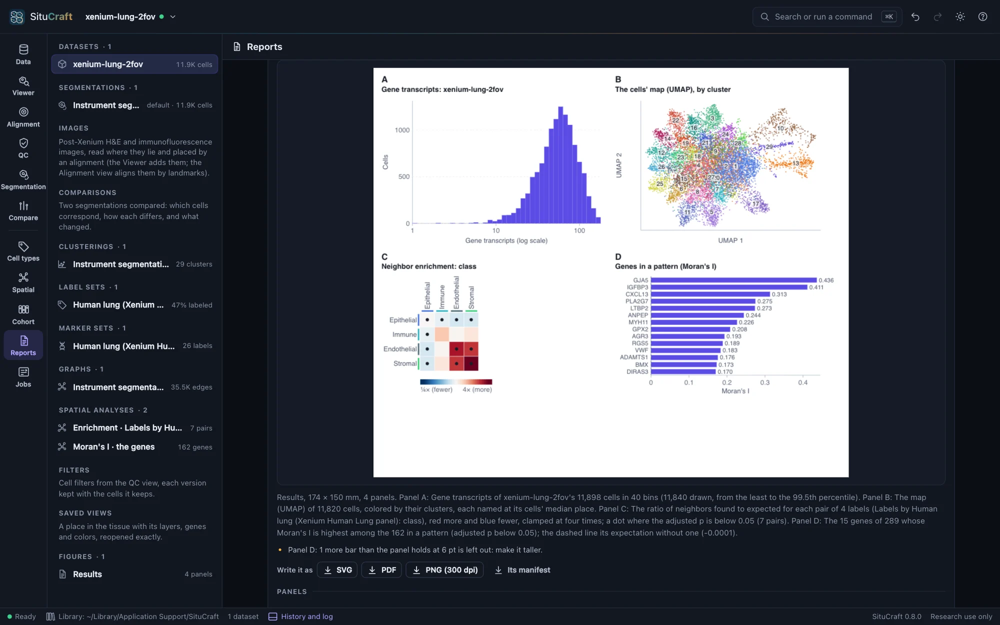
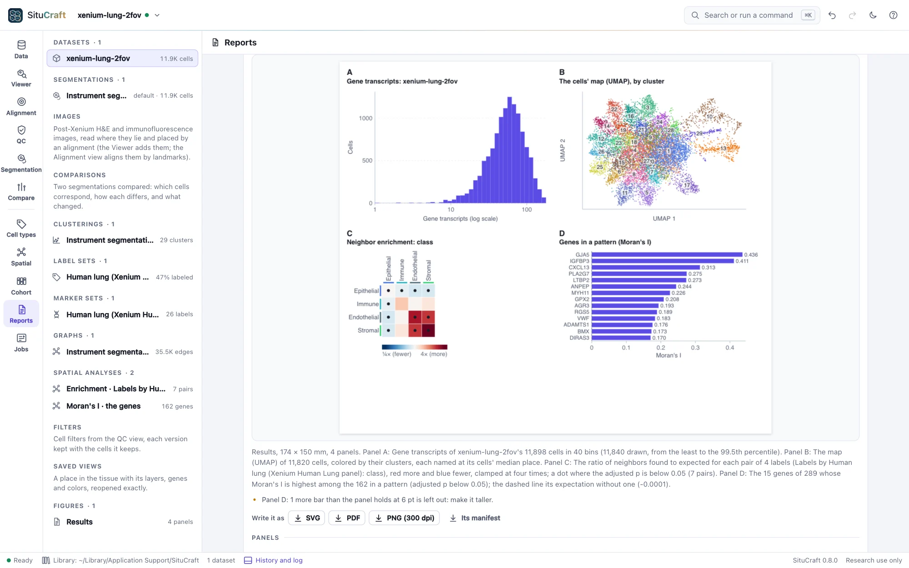

Figures
A figure is drawn from the project, not copied from the screen: saved views of the tissue at the figure's size, placed in µm with a scale bar and a legend, beside plots of the results they led to. Every file written carries what it was drawn from.
A figure
The Reports view keeps the project's figures. A figure is a page of panels, at a journal's column width (one column, 85 mm; one and a half, 114 mm; two, 174 mm) or a 16:9 slide, its text 7 pt by default and never below 6 pt. Its panels are lettered A, B, C in reading order. New figure makes one of the first saved view; Add a panel adds a panel of the tissue, of a result (below) or of text beside the last one, and each panel's place and size on the page (in points, 1/72 inch) can be set. The tissue panels of a row keep their images as tall as each other, whatever their legends hold. The preview draws the figure as it will print. The project tree lists the figures, and a figure opens the Reports view at it.


A tissue panel
A tissue panel is a saved view of the Viewer (see Saved views) drawn at the panel's size. Its region is a center and a width in µm, at first the view's center and the width a Viewer a thousand pixels wide shows at its zoom; its height follows the panel's shape. The panel draws what the view shows:
- The stains, each visible channel's sample under each pixel windowed, raised to its gamma and given its color, the channels added, as the Viewer's shader composites them, at 300 dots an inch (the pyramid level whose samples are no larger than the output's pixels). They are one image, as the stains are measured.
- Post-Xenium images the view shows (an H&E or an immunofluorescence image), each placed by the alignment in use, through its deformation if it has one, as the Viewer places it: an H&E laid over at its opacity, an immunofluorescence image's channels added in their colors.
- The cells, from their full-resolution outlines: outlined, and filled as the view fills them (by a label set, clusters or niches, a number such as the cell's area on viridis over its 1st to 99th percentile, a refinement's certainties or limitations, or each cell's review), as paths placed in µm; the nuclei outlined when the view shows them.
- The regions of the dataset, when asked (Draw the dataset's regions): each outlined in its class's color, faintly filled, and named.
- The transcripts of the view's genes, of quality 20 or more, each a point in its gene's color. A region holding more than 250,000 of them is not drawn: show a smaller one, or fewer genes.
- A scale bar of a round length (1, 2 or 5 times a power of ten µm, about a fifth of the width), bottom right, white over the tissue; its length can be set.
- A legend below: the stains, the genes, and the fill's labels among the cells drawn, or its scale with its range.
Each panel is described in words (the dataset, the view, the width shown, the stains, how many cells and transcripts it draws, the scale bar), and the description is written with the figure.
Results
A result panel draws a plot of what the project holds, at the figure's text size and never below 6 pt, from the same numbers its view shows:
- A QC distribution: a dataset's cells' transcripts, all transcripts, area or nucleus area, in the QC view's 40 bins from the least to the 99.5th percentile (on a log scale if asked), with a filter's thresholds.
- The cells' map: a clustering's map (UMAP), each cell a point colored by its cluster or a label set's labels; many clusters are named on the map, at their cells' middle, rather than in a legend.
- A spatial answer: an enrichment's or nearest distances' heat map (each pair's ratio against chance, red more and blue fewer, a dot where the adjusted p is below 0.05), or Moran's I's genes in a pattern, strongest first.
- A cohort's comparison: its effects with their intervals (each label's odds or density ratio on a log scale, or each spatial statistic's), a label's or statistic's units by group, a label's volcano with the strongest genes named, or a gene by group. Those found (an adjusted p below 0.05) are red.
A plot that has more rows than its panel holds at 6 pt draws those that fit and says how many it left out.


Writing it
SVG and PDF are vector: the cells, points, legend and text are drawn as shapes and text (the PDF's text in Helvetica, which every reader has), and the stains as one image of 300 dots an inch. PNG is 300 dots an inch, its print size recorded in it. The same figure written at the same time is the same bytes in SVG and PDF.
Every file carries the figure's manifest: the figure, and for each panel what it shows, what it was drawn from (the dataset by its bundle's run and fingerprint, the saved view as it was, the label set, clustering, image and alignment drawn; a result's analysis, map or comparison), what it drew (a tissue panel's region in µm, µm a point, the scale bar, the cells, transcripts and regions, the stains' pixels and level and each image's; a plot's counts) and a digest of its drawing; SituCraft's version and commit; when it was written; and a fingerprint of all of it. It is in an SVG's metadata, a PDF's attached file and a PNG's text chunk, and Its manifest writes it alone as JSON.
Reading a figure back
Read a figure back… opens a figure SituCraft wrote and compares it with the project: whether its manifest is as it was written (its fingerprint), whether each panel's saved view, dataset and artifacts are still those it was drawn from, and whether each panel, drawn again now, is drawn the same.
What made a result
Below the figures, the Reports view shows what made any result (a figure among them): each step from the bundles to it, with its method, parameters, seed, software and references, written as Markdown, JSON or BibTeX. See The record.
By remote control
figure makes a figure of saved views side by side, or of any panels (the tissue, a QC distribution, the cells' map, a spatial answer, a cohort's comparison, text) laid out in rows, or changes one, and answers what each panel draws; write_figure writes it as SVG, PDF, PNG or its manifest, with a fixed time when asked; read_figure reads one back. See Remote control.
How it is checked
The validation suite makes a figure of a saved view of the Lung example (its DAPI stain, three genes, the cells filled by their lineage), writes it in every format, and reads each with its own readers:
- The SVG and PDF are the same bytes when written again; the manifest is the same in every file, and its fingerprint is the suite's own.
- The stains' pixels in the SVG are the suite's own composite of the tiles' samples, pixel for pixel, and the Viewer's own pixels are that composite within one level of 255.
- The scale bar is its length in µm; the cells drawn are those whose outlines meet the region, each filled as the Viewer fills it; the points are the genes' transcripts in the region.
- No text is below 6 pt, and the PDF's text is the SVG's.
- Read back, the figure is unchanged and draws the same.
For results, it draws the Lung's transcripts per cell, its cells' map, its classes' enrichment and its genes in a pattern, and the simulated cohort's shares, volcano, SIM033 by group and enrichments by condition:
- The histogram's counts are the suite's own binning of the cells, bar by bar.
- The map has a point for each cell mapped, and its clusters are named.
- The heat map has a square for each pair in its ratio's color, and a dot for each pair found.
- The bars name the genes in a pattern, strongest first.
- The forest puts each label's estimate where its ratio falls on the log axis, and those found are red.
- The volcano has a point for each gene tested, those found red and SIM033 named, and the gene by group has a dot for each unit.
With the simulated tissue's H&E, each of 60 pixels of the figure matches the suite's own placing of the image (through the alignment's deformation and transform, the image's pixels interpolated from its tiles). The Viewer's own pixels match the same placing within four levels of 255.